从零开始学习 Godot 4 开发 2D RPG 游戏
在城镇场景中添加一个 CanvasLayer 节点。画布层会渲染在所有元素之上。
然后添加一个 Panel 节点作为主按钮的面板。根据需要设置尺寸。
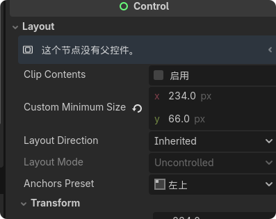
然后点击锚点预设，调整到想要设置的位置，并进行具体位置修改。
再给 Panel 节点添加一个子节点，边距容器节点 MarginContainer，在锚点预设中铺满。
然后再给边距容器节点添加一个水平排列控件节点 HBoxContainer 子节点。
再给 HBoxContainer 节点添加 Button 子节点。根据具体大小设置 Button 子节点的像素大小。
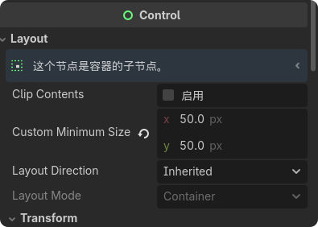
然后给面板和按钮创建样式。在 styles 中添加。
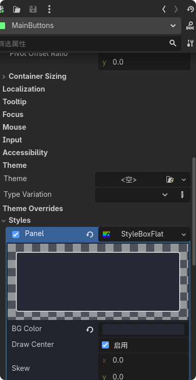
然后给按钮节点添加一个纹理子节点 TextureRect 节点，然后添加图标。
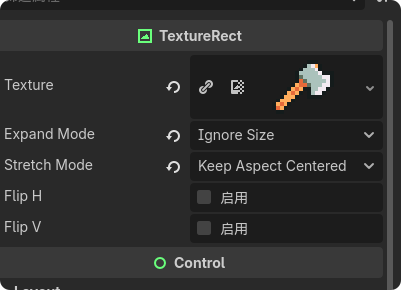
然后给 CanvasLayer 节点添加一个脚本。导入需要的按钮信号到 HUD 里面。
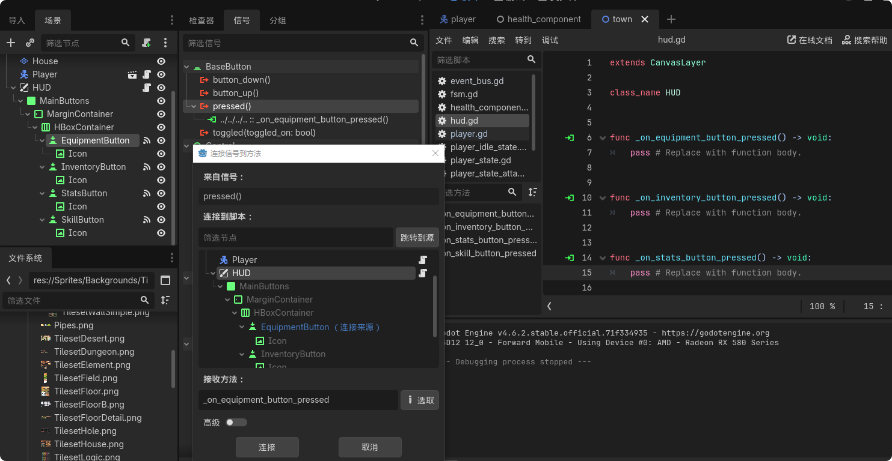
在 HUD 节点下面创建一个新的 HBox 节点，命名为 Panels。然后修改最小尺寸大小。
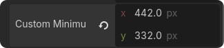
HBox 节点用于创建整体的框架。
然后在 HBox 节点下面添加一个面板容器节点 PanelsContainer。面板容器节点与面板节点的区别在于它会根据子元素的大小自动拓展。
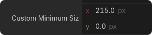
Y 值可以根据子元素自己调整。这样外面的大边框就完成了。
给创建的面板容器节点 PanelsContainer 添加一个边距容器子节点 MarginContainer。
再边距容器子节点添加一个 VBox 子节点。
VBox 节点用于垂直对齐所有内容。
然后在 VBox 节点中添加一个标签子节点 Label，内容写"库存"。
再给 VBox 节点添加一个网格容器子节点 GridContainer。
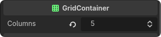
修改网格容器的列数。
然后在网格容器节点 GridContainer 添加子节点，Button 节点作为槽位，设置它的大小。
如果槽位太靠近边框，可以在边距容器节点 MarginContainer 修改，添加边距。
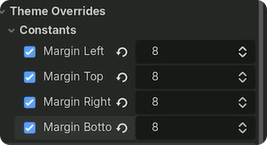
然后添加 Control 控制节点为空节点用于添加空隙。还可以添加 ColorRect 节点给空隙添加颜色。
再给 VBox 添加一个子节点为 HBox。
在 HBox 节点中添加 TextureRect 节点和 Label 节点。
TextureRect 节点用于添加上图标Label 节点用于添加数字现在已经完成了库存面板。然后找到 PanelsContainer 节点，保存为一个场景，保存在 UI 文件夹里面。
然后找到场景点击进入，将 Button 节点保存为一个场景。
然后分别给 PanelsContainer 节点场景和 Button 节点场景添加脚本。
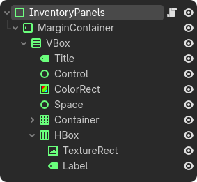
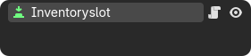
装备面板跟库存面板创建方式差不多。
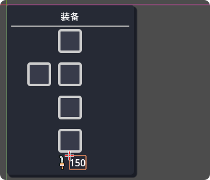
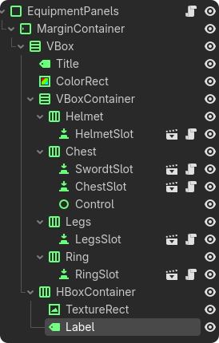
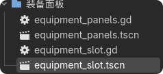
面板的创建方式都差不多，但是因为属性面板的值有加点内容，所以要将需要改变的数字引入脚本中，还有添加按钮点击的 Pressed 信号。
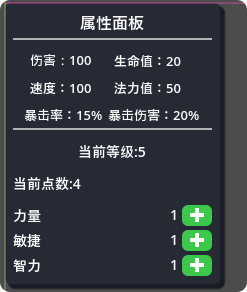
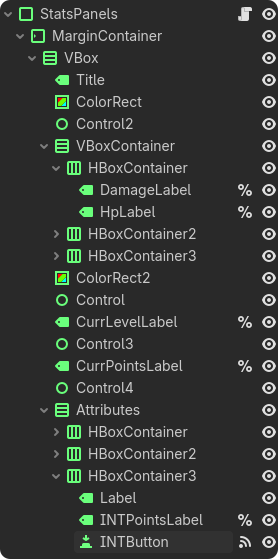
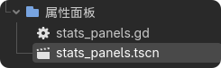
extends PanelContainer
class_name StatsPanels
@onready var damage_label: Label = %DamageLabel
@onready var hp_label: Label = %HpLabel
@onready var vel_label: Label = %VeLLabel
@onready var mana_label: Label = %ManaLabel
@onready var crit_label: Label = %CritLabel
@onready var crit_dmg_label: Label = %CritDMGLabel
@onready var curr_level_label: Label = %CurrLevelLabel
@onready var curr_points_label: Label = %CurrPointsLabel
@onready var dex_points_label: Label = %DEXPointsLabel
@onready var int_points_label: Label = %INTPointsLabel
@onready var str_points_label: Label = %STRPointsLabel
func _on_str_button_pressed() -> void:
pass
func _on_dex_button_pressed() -> void:
pass
func _on_int_button_pressed() -> void:
passextends PanelContainer - 继承面板容器@onready var ... = %LabelName - 获取界面元素的引用_on_str_button_pressed() - 力量按钮点击回调_on_dex_button_pressed() - 敏捷按钮点击回调_on_int_button_pressed() - 智力按钮点击回调技能面板创建跟之前差不多，但是技能的按钮要单独拿出来进行创建一个场景，进行修改好并添加一个脚本。
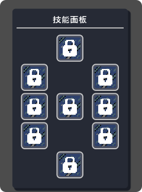
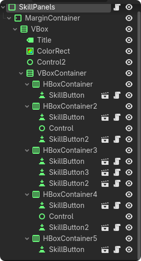
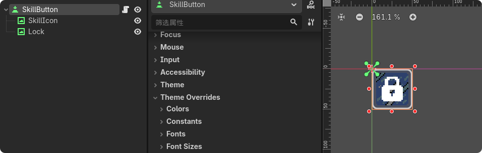
新创建一个场景，添加一个按钮节点，命名为 EquippedSkillButton。然后调节大小。
再添加子节点：Panel 用于做背景，TextureRect 用于做图标，Label 用于添加标签。
并且给按钮添加一个脚本。
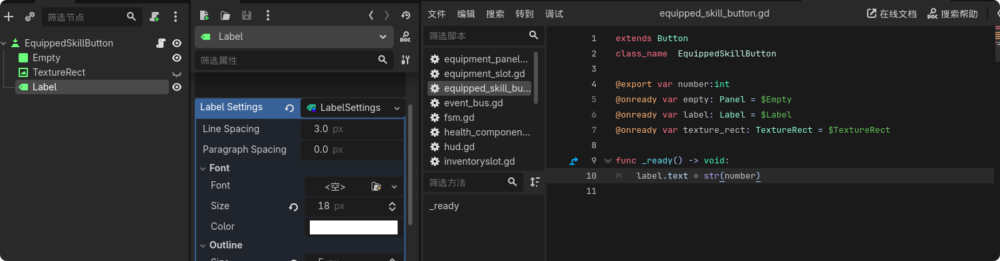
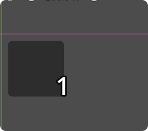
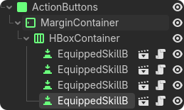
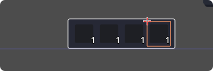
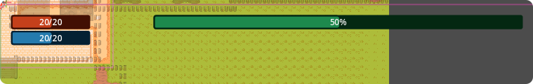
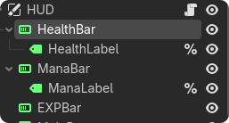
HUD 脚本导入所有值，并添加面板点击可见。
extends CanvasLayer
class_name HUD
@onready var equipment_panels: EquipmentPanels = %EquipmentPanels
@onready var stats_panels: StatsPanels = %StatsPanels
@onready var skill_panels: SkillPanels = %SkillPanels
@onready var inventory_panels: InventoryPanels = %InventoryPanels
@onready var health_bar: ProgressBar = $HealthBar
@onready var mana_bar: ProgressBar = $ManaBar
@onready var exp_bar: ProgressBar = $EXPBar
@onready var health_label: Label = %HealthLabel
@onready var mana_label: Label = %ManaLabel
func _ready() -> void:
EventBus.on_player_health_update.connect(_on_player_health_update)
EventBus.on_player_mana_update.connect(_on_player_mana_update)
EventBus.on_player_new_level.connect(_on_player_new_level)
func _on_equipment_button_pressed() -> void:
equipment_panels.visible = not equipment_panels.visible
func _on_inventory_button_pressed() -> void:
inventory_panels.visible = not inventory_panels.visible
func _on_stats_button_pressed() -> void:
stats_panels.visible = not stats_panels.visible
func _on_skill_button_pressed() -> void:
skill_panels.visible = not skill_panels.visible
func _on_player_health_update(curr: float, max: float) -> void:
health_bar.value = curr / max
health_label.text = "%d / %d" % [curr, max]
func _on_player_mana_update(curr: float, max: float) -> void:
mana_bar.value = curr / max
mana_label.text = "%d / %d" % [curr, max]
func _on_player_new_level(curr: float, new_level: float) -> void:
exp_bar.value = curr / new_levelextends CanvasLayer - 继承画布层，使 UI 始终在游戏内容之上@onready var equipment_panels - 获取装备面板引用@onready var health_bar - 获取血条 ProgressBar 引用EventBus.on_player_health_update.connect() - 连接生命值更新信号equipment_panels.visible = not equipment_panels.visible - 切换面板可见性health_bar.value = curr / max - 设置进度条值（0-1 之间）health_label.text = "%d / %d" % [curr, max] - 格式化显示数值health_bar.value = curr / max（进度条更新）：
目的：计算当前生命值的百分比。
作用：如果你的 health_bar（TextureProgressBar 或 ProgressBar）的 max_value 设置为 1，那么这个计算会将血条填充满或缩短。
直观感：玩家一眼就能通过血条的长度判断生存状态，而不需要去读具体的数字。
health_label.text = "%d / %d" % [curr, max]（文本更新）：
目的：将数值格式化为字符串。
作用：%d 是占位符，表示整数。它会将浮点数（float）强制转换为整数显示，避免出现 95.4321 / 100 这种凌乱的 UI。
精确感：给玩家提供准确的剩余血量信息，比如"还剩 10 点血，还能扛一下"。
然后可以将玩家场景保存在 Town 场景中，主要负责玩家实体的动态生成以及全局状态的同步，给 Town 添加一个脚本：
extends Node2D
class_name Town
@export var player_scene: PackedScene
# 你可以在 Godot 编辑器的检查器（Inspector）面板里，
# 直接把不同的玩家预制体（比如"剑修玩家"或"法修玩家"）拖进去。
# 这让你在切换测试不同角色时极其方便。
func _ready() -> void:
create_player()
func create_player() -> void:
var player: Player = player_scene.instantiate()
# 动态生命周期管理，在场景树里摆放一个 Player 节点更灵活
add_child(player)
player.setup()
# add_child 之后立即调用 setup() 可以确保玩家在正式开始行动前，属性已经加载完毕
EventBus.on_player_created.emit()@export var player_scene: PackedScene - 可在编辑器中指定玩家预制体player_scene.instantiate() - 实例化玩家场景add_child(player) - 将玩家添加到场景player.setup() - 初始化玩家属性EventBus.on_player_created.emit() - 发出创建完成信号